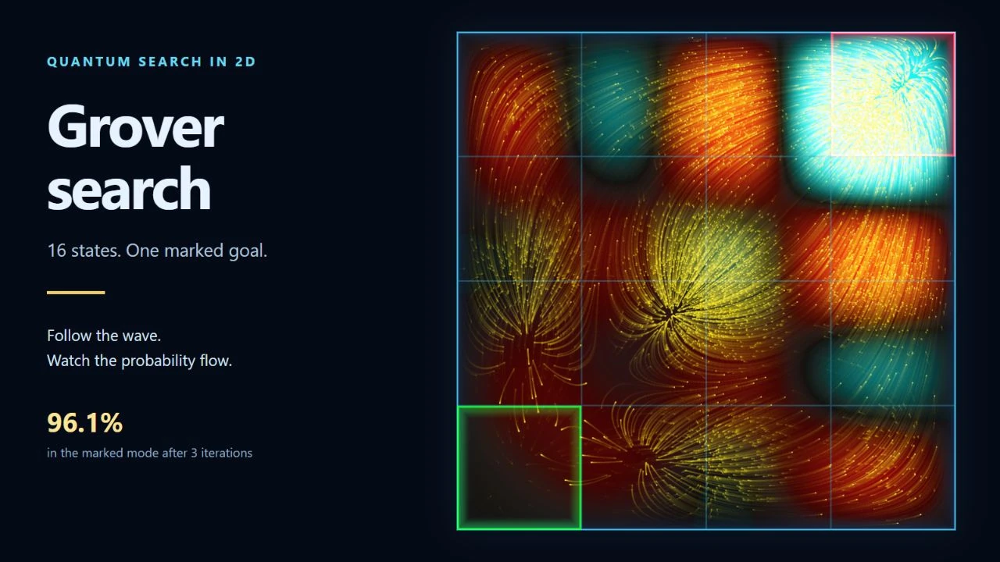

Quantum computing / probability flow
Grover Search 2D
Choose an initial state and a goal, then watch Grover's algorithm amplify one of 16 outcomes. Explore the wave's amplitude and phase, probability current, and guided particle trails as the quantum gates act.
Play demo ↗